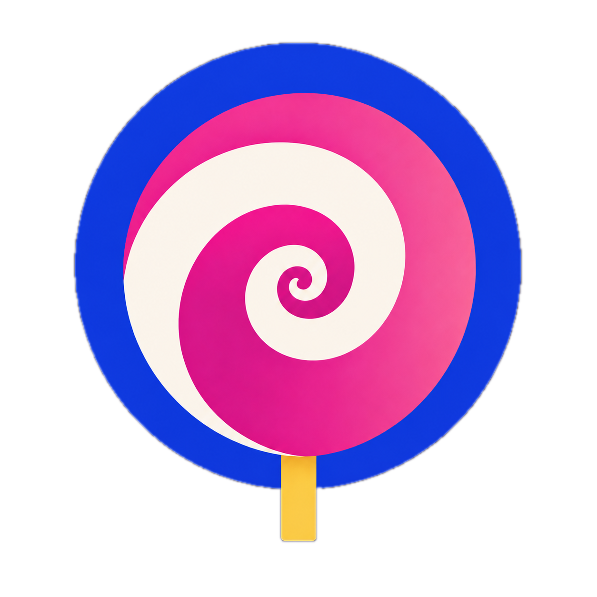

Face check
Pulse, breathing & recovery
The information architecture is the one Salim picked: brand row, "A moment for you." with the spiral, three personal checks as rows in Codex's order and copy, then the demos under one heading, and Home · Health · History tabs. What changes is the visual pass: each check has to read as tappable without a giant teal button and without a list chevron, the icons have to carry some charm, and the page has to stay clean. A uses candy cards with a tinted "go" coin; B makes the tiles themselves the buttons; C keeps rows and uses a dark Sweet Lens hero for boldness. Settings placement is a separate page (settings-placement.html).

